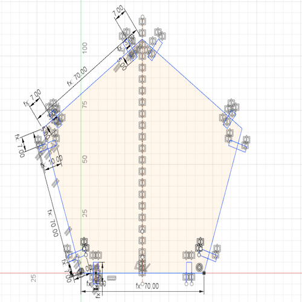
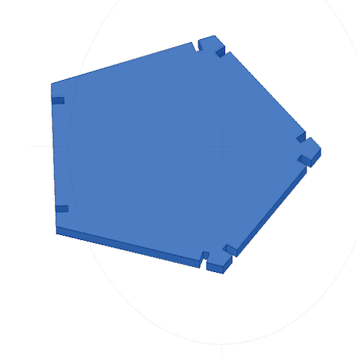
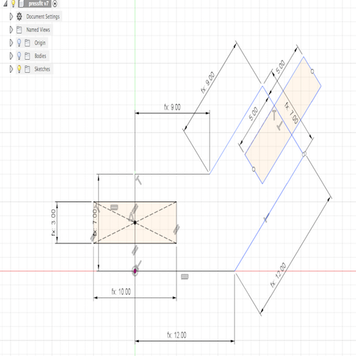
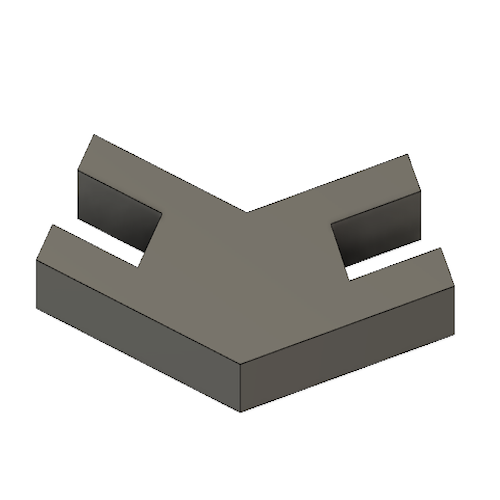

# Goal:
Design a press-fit kit, and laser cut it in cardboard.
# Tasks:
1- Design a sketch of a press-fit kit and extrude it using Fusion 360 software.
2- Using the Universal Laser System interface, laser cut the extruded design on cardboard with 3 mm thickness.
# Procedures:
My press-fit kit consists of 12 pentagons and 45 chevron arrows. This design was done by Matt Blackshaw as shown in the picture below. and refer to the work done by Matt Blackshaw [website].
Before starting the sketch, I set up seven parameters needed for the design by clicking on Modify, Change Parameters, then the User parameters.
1- To sketch the pentagon, I followed the steps in this video where I needed to use construction lines and circles.
2- Draw two rectangular slots at each corner with a width equal to the cardboard thickness and 10 mm slot length (sl).
3- Extude the design to transfer it from 2D to 3D by 3 mm, which is the cardboard thickness.
4- To sketch the chevron arrow, I drew two joint rectangles. The first is horizontal, but the other is inclined by 45 degrees. Then, I drew two slots with the same dimensions as the pentagon.
5- To finalize the 3D design, I extrude the arrow by 3 mm as shown below.
# Challenges:
I did not face any major challenges because I have previous experience in using Fusion 360 software and the laser cutting machine.